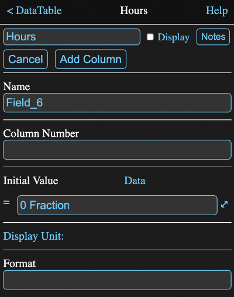
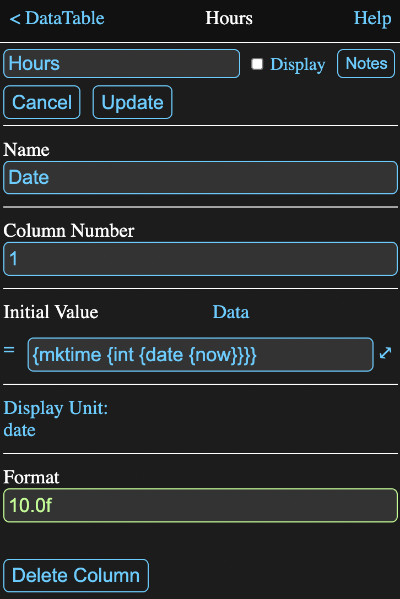
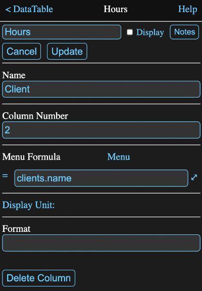
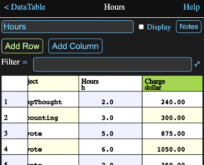
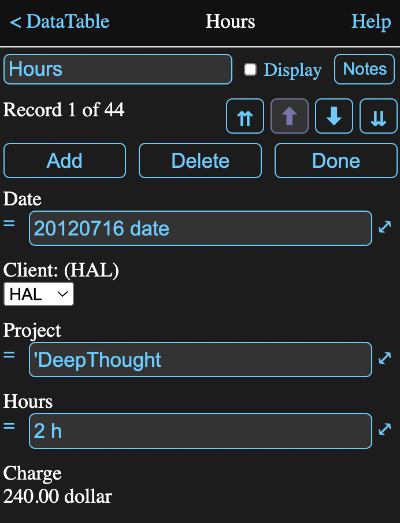

Overview
Data tables are used to store static numeric or textual data in a tabular form.
By "static", I mean that once entered, the data in a cell is not dependent on any other values. A formula can be used to enter a cell's value, but it will be evaluated immediately upon entry and only the resultant value, not the formula itself, will be stored. This is different from other Math Minion tools, such as expressions and matrices, whose formulas are reevaluated whenever any of their inputs change.
This makes data tables ideal for storing the kind of information that is often stored in spreadsheet or database tables. The analogy is stronger with the latter as spreadsheets mix their data and calculations in the same cells, whereas databases and Math Minion store static data in their tables and use external, and hence visible, operations to slice and dice this data into other table value representations, without altering the source data.
There is an exception though, in that you can create data table columns whose values are calculated by a single formula. This is really just a display convenience that makes it easy to display some calculated results, usually involving values from other columns, along side the data columns. For instance you might have a calculated column displaying the result of adding other columns together.
Columns (Fields)
Unlike the matrix tool, each column of a data table has a name and columns can have different unit types or can even contain textual information. In this way columns behave much like the fields of a database table, with the rows being the records. Columns will normally be data columns, but it is possible to define a calculated column if desired.
Each data column also has a default formula, which is evaluated whenever a new row is added to the table. The result of this evaluation is used as the initial value for that column's cell in the new row.
Data columns can also be presented as menu columns, in which case the default formula should produce a table, matrix or array value. If this value has two or more columns, the first column will be the displayed values, while the second column will be the actual stored values. If there is only a single row or column, then those values will be both the displayed and stored values. This allows you to select values using more convenient names, such as a company name, while actually storing some id code that will stay the same, even if the company changes its name. New rows will initially have the value of the first item.
A calculated column has a single formula that must evaluate to an array with the same number of rows as the data table has. Individual cells in a calculated column cannot be modified.
Information View
In addition to displaying the rows and columns of data, the information view for a data table allows you to modify cell contents, add rows and columns or edit the properties of existing columns.
Add Row
The Add Row button will add a new row to the bottom of the the table, with default values set as defined by the column definition. It will also open a row editor where you can modify those values. The Add Row button is disabled if there isn't at least one column defined.
Add Column
The Add Column button will display the column definition editor with some default values. Change these as appropriate and tap the Add Column button in that view to create a new column.
If the table already has one or more rows when a data column is added, the initial value formula (see the column definition editor) will be evaluated for each existing row and the resulting value used for that row in the new column.
Filter
If a formula is supplied for the filter formula field, only the rows matching the filter will be shown. The result of the formula should either be a string, as shown below, or a boolean array the with the rows to be shown being true. See the description of the arguments for the select function in the function browser for more detail.

The filter only affects what is shown in the Table Display and does not change the value returned by references to the tool.
Note that if the filter formula resolves to a string, but the first character of the string is a single quote, then it is ignored. This means prefixing any filter formula with two single quotes will disable the filter, which is handy for temporarily turning it off.
Table Display
The lower part of the information view shows the table data. You can scroll this table both horizontally and vertically by dragging on a cell. Dragging on the row or column headers will scroll rapidly.
Tapping on a cell that isn't a row or column header will open a row editor displaying formula fields for all the data columns, menus for menu columns and static displays for any calculated columns.
You can change the values for data columns to any valid formula and as soon as you leave the field, the formula will be immediately evaluated and the result placed in that field. The formula itself is not retained though.
Similarly you can choose any item from a menu column's menu and the associated value will be placed in that field.
Tab and shift tab are convenient shortcuts for moving between fields.
Note the value you enter must match the unit type for the column, which usually means having a unit. such as:
30 km
If you are entering a value into a string column, the normal quote marks can be omitted. If you wish to enter an actual formula into a string column, begin the formula with an equals sign to tell Math Minion to evaluate it, rather than just taking it as a string.
Table Display Headers
Tapping on a column header cell (i.e. label in top row) will open the column definition editor for that column.
Tapping on a row header cell (i.e. row number) will select that row and the Add Row and Add Column buttons will be replaced by a Delete Rows button.
Tapping on additional row headers will select those rows as well. Tapping and holding on a row for a second will select all the rows between it and the previously selected row.

Tapping the Delete 5 Rows button in this view would remove rows 2, 4, 5, 6, 7.
Column Definition Editor
Tapping on the Add Column button or on the column header for an existing column will bring up an editor where you can define the column properties. If it is a new column, the editor will look like:

Tapping on the header cell for an existing column, will bring up the editor with the fields filled in with the existing values and with some different buttons:
Button Functions
- Cancel: dismisses the editor, without adding a column and abandoning any changes made for an existing column.
- Add Column: only appears for new columns and when tapped adds the new column to the data table and dismisses the editor.
- Update: appears instead of the Add Column button when an existing column is edited. Tapping it applies changes made and dismisses the editor.
- Data: indicates the column type. Tapping it will switch the column to a
menu type and the formula field will be relabelled Menu Formula and the
Data label will change to Menu. An additional calculated column
type can be selected by tapping on Menu when you are first adding a column. The
label will change to Calculated and tapping on it will cycle back to Data
Once a column has actually been added it is only possible to switch between Data and Menu. The label will no longer appear for calculated columns.
Column Name
A new column will be given a generic name, but you will almost always want to use this field to modify it to something meaningful. The columns of a given data table must have unique names. Having spaces in the names is allowed, but not recommended.
Column Number
This is a number representing the position of the column in the table from 1 for to the number of columns starting with the leftmost. Changing it will move the column to the new position.
Initial Value
A data column has a formula labeled Initial Value which will be evaluated whenever a new row is added to the table. The result will become the initial value for the column cell of the new row.
The initial value formula in the image above is:
{mktime {int {date {now}}}}
which calls a series of functions to produce today's date without any time of day information.
In addition, when you first add a column, the default value formula has a special significance in that its value determines if the column will be a string or a numeric column and if numeric, what its unit type will be.
Note: after adding a column, the type of value the column holds cannot be changed without removing the column and adding it again. You can however modify the initial value formula as long as it returns the same type of value.
The formula can reference other fields to the left of it in the table. This reference will return the value for the same row. This is particularly useful when adding a column to a table with existing data.
For instance if you wanted to add a column named Next where every value was one day greater than the Date column, the initial value formula could be:
$.date + 1 d
If desired, the original column could then be deleted and the new one renamed and repositioned to replace the first. You would also want to change the initial value formula to something like it originally was.
Menu Formula
Menu columns have a formula labeled Menu Formula and it should evaluate to an array of possible values for the column. If it evaluates to a matrix or table with more than one row and one column, then the values of the first column will be what is displayed, while the values of the second column will be what is actually stored in the data table field. When a new row is added, the first value is what is added by default.
In this example, taken from the Getting Started session, the client column is a menu that takes its values from the name column of another data table, called Clients and the menu formula is thus:
cients.name
Column Formula
Calculated columns have a formula labeled Column Formula and it must evaluate to an array of the same length as the number of rows in the table.
The formula can reference other fields in the table and in this case will return the entire column. This is useful for doing things like displaying a column that is the function of some other columns. In this example, the Charge column of the Hours table is calculated by multiplying the hours column by a rate extracted from the Clients table using the following formula.
$.hours * clients.rate[
{indexof
$.client,
clients.name
}[0,1]
]
The dollar sign is a shortcut for the tool that owns the formula, i.e. Hours in this case, so $.hours is the hours column of the table. It is multiplied by the rate found in the Clients table by looking up the index of the name of the corresponding row, $.client in the Clients table name column and using it to get the appropriate value from the Rate column of Clients.
The results is shown below.
Display Unit
If a display unit is not selected, then the default conversion unit for the column type will be used when displaying the table. Tap the unit or label to open the unit browser to select a unit to be used instead. It must be of the same type as determined by the initial value formula when the column was first created.
In the images above, the time unit date has been selected as a more human readable time value than the underlying seconds since the beginning of 1970. Similarly the Hours column has a time unit of h and the Charge column has the convenience unit of dollar, which is just a synonym for the dimensionless Fraction unit.
Format
You can use this field to format numeric columns. The format string is styled on C format strings and typically is of the form:
%12.4f
which says the field should be 12 characters wide with 4 characters after the decimal point in normal floating point format. In Math Minion, the percent sign is optional.
If c is used instead of f, the numbers will have commas added (e.g. 1,234,567.89).
An e can be used instead of the f for exponential format (e.g. 1.23457e+6).
You can even show numbers with an arbitrary base between 2 and 36. For instance a value could be represented in hex with 14.16x.
Note it is also permissable to omit the size number, i.e. .2f would be fine and the number would just be right justified.
The columns in the examples here have formats appropriate for dates, hours and dollars.
Row Editor
When you add a row or tap on any cell in a row, other than the row number, the row editor with appear:
It contains the following:
Record Number and Count
Record 1 of 44 - hopefully pretty self explanatory.
Row Navigation Buttons
- ⇈ - first record
- ⬆ - previous record
- ⬇ - next record
- ⇊ - last record
Add
Adds a new row after the current row and displays it in the editor. Note that while the Add Row button on the main data table page always adds the row to the end of the table, this allows you to insert a row into the table.
Delete
Deletes the displayed row and displays the next one.
Done
Exits the row editor and returns to the main data table display.
Fields
Each column is presented with its name and a value field that depends on the column type.
- Data - formula field containing its value.
- Menu - a drop down menu of available values.
- Calculated - columns just have an uneditable display.
Note: Be cautious when editing rows while filtering the records shown. If you make a change which makes the current row invisible, the row editor will switch to the next visible row.
Importing, Copying and Pasting
Many applications, such as spreadsheets, can export data as comma separated value (CSV) text files. These represent tabular data, with each row of data being on one line, with the column fields separated by commas or optionally another character.
By adding 3 simple header lines to the top of a csv file and copying it to the clipboard, you can simply paste the result directly onto a Math Minion diagram to create a data table.
You can also create these csv files, complete with the headers, for many Math Minion tools by using the Copy As Table selection from the tool icon menu on the diagram.
This makes it easy to create a data table representation of other calculations as well as export Math Minion data to other applications.
Using expressions to create new representations of a table and then copying it and pasting it is an easy way to transform table values into a new static table.
CSV Format
To create a data table by pasting csv data, it must have three lines added to the top.
First Header Line
The first must be of the form:
table,en
The word "table" is just a flag telling Math Minion you want to create a table.
It is followed by a separator character. This is most commonly a comma, but tabs and semicolons are also common, particularly in regions where commas are used instead of decimal points.
The "en" is a locale indicator, in this case for English regions. This determines how the numbers in data below should be interpreted, in particular the handling of the fraction separator (decimal point in English).
For example the headers for a German CSV file might look like:
table;de
Second Header Line
The second line contains the names to be used for the columns. These must be double quoted and separated by the separator character. For instance:
"Date","Client","Project","Hours","Charge"
Third Header Line
The third line contains the conversion units that match the values of the data columns below. These must also be double quoted and separated with the separator character. If the data for a column is a string, then the unit should be "string". For example:
"date","string","string","h","dollar"
Data
The rest of the "file" simply consists of the data, with each line representing one row with the column data separated by the separator character. String values should be in double quotes.
Putting it all together a simple CSV representation of a table would look like:
table,en "Date","Client","Project","Hours","Charge" "date","string","string","h","dollar" 20120716,"HAL","DeepThought",2,240 20120716,"Fred","Accounting",3,300 20120717,"Acme","Coyote",5,875 20120718,"Acme","Coyote",6,1050
Formula Parameters
Parameters that can be accessed in the form a.b where a is the tool and b is the parameter.
If the parameter is omitted a table value is returned. If the parameter is a column name, then the column value is returned as a column array.
Other parameters are:
- table - also returns a table value.
- nrow - number of rows in the table.
- ncol - number of columns in the table.
- html - a html code representation of the tool.
- notes - the notes for the tool
- myname - the name of the tool